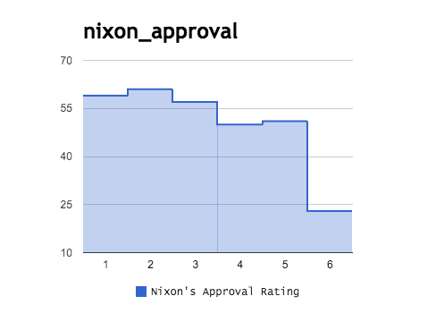
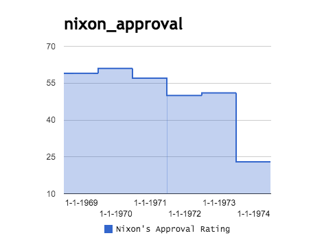
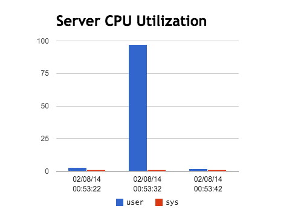

How does dropchart.io work?
How do I use dropchart.io?
It’s pretty easy. Assuming that you are using a modern web browser (Chrome, Safari >= 6, Internet Explorer >= 10), then just drag and drop one or more files onto the dropchart.io page, and you’ll get some nice charts.What file formats are supported?
dropchart.io supports files with CSV and JSON data. There are several samples of JSON and CSV dropchart.io requests. The formatting in general depends on the chart type you want. By default, all CSV charts will use the Stepped Area Chart (https://developers.google.com/chart/interactive/docs/gallery/steppedareachart).Are there any examples I could look at?
Yes! Take a look at the samples.How should CSV files be formatted?
CSV files will be parsed using the PapaParse (http://papaparse.com/) library. You can find some CSV examples in the samples collection. For CSV files, dropchart.io will test whether the first column - after the first row, which is always considered a header row - contains numeric or string values. If it contains string values, then the first column will be interpreted as the chart’s X-axis. If it only contains numeric values, then dropchart.io will automatically add a column called “Series” for the X-axis, with each row getting a new series sequence number. For example, take this CSV file of Gallup approval ratings for President Nixon from January of each year of his presidency:
Nixon's Approval Rating 59 61 57 50 51 23These data give you a chart with automatic X-axis sequence numbers:

This is the correct ordering, but perhaps it would be more meaningful to have the year for each approval rating. Suppose you try this instead:
Year,Nixon's Approval Rating 1969,59 1970,61 1971,57 1972,50 1973,51 1974,23

Since the first column contains numbers, dropchart.io interprets the values as years. Even if you add quotes around the year the values will be interpreted as numbers. Instead, you can add some non-numeric characters (besides quoted) in there, like this:
Year,Nixon's Approval Rating 1-1-1969,59 1-1-1970,61 1-1-1971,57 1-1-1972,50 1-1-1973,51 1-1-1974,23

It’s a bit cludgy, but that’s how it goes with CSV data. If you want to be more explicit about the data, try building it in JSON.
How should JSON files be formatted?
dropchart.io JSON requests have the following basic format. The first section is your options, and the second section is your values. For most chart types, values contains an array of arrays, i.e. [ [1], [2], [3] ]:
{
"options": {
"title":"Server CPU Utilization"
},
"values":[
["date","user","sys"],
["02/08/14 00:53:22",3,1],
["02/08/14 00:53:32",97,1],
["02/08/14 00:53:42",2,1]
]
}
